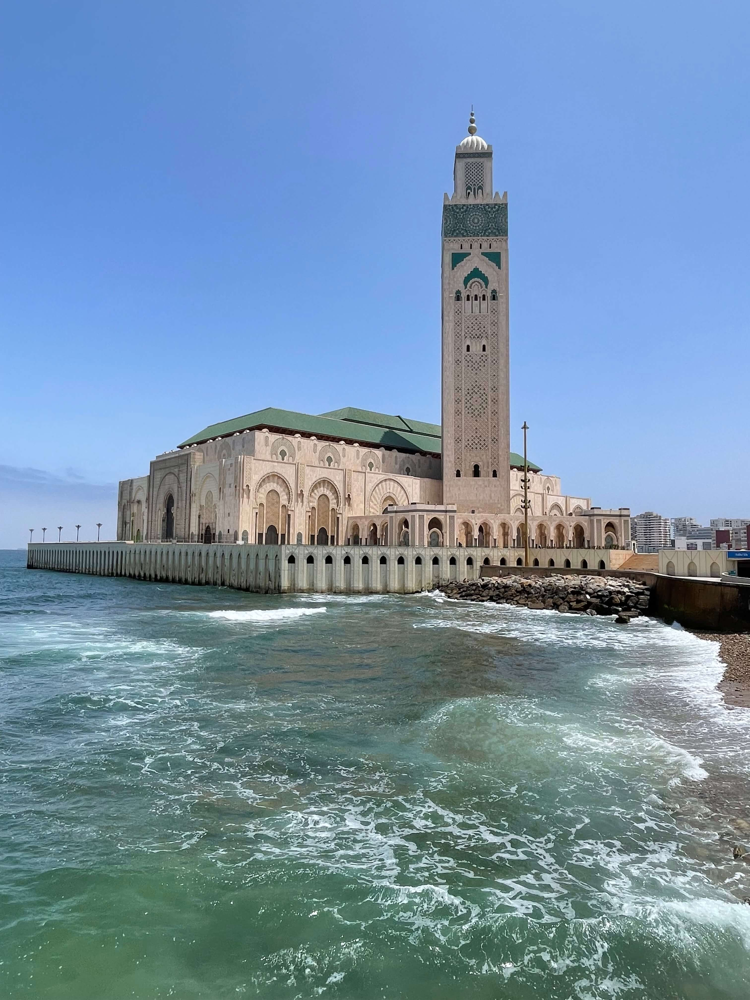

Tangier: Where the Atlantic Meets the Mediterranean
Tangier, my second home, is a city of contrasts where European and African influences merge. When visiting Tangier, start your day with a stroll through the Kasbah, where you'll be rewarded with breathtaking views of the Strait of Gibraltar. Don’t miss exploring the American Legation, a museum showcasing Morocco’s rich ties with the West. For a taste of local life, head to the Petit Socco, a charming square brimming with cafés that have witnessed the city’s storied past. If you're in the mood for relaxation, Tangier's beaches offer the perfect escape. Here’s an insider tip: For an unforgettable view, visit Cap Spartel. This viewpoint offers a stunning panorama where the Atlantic Ocean meets the Mediterranean Sea and features a beautiful lighthouse, as seen in the picture I took.

Marrakech: The Red City’s Hidden Gems
Marrakech is often the first stop for many travelers, and it’s easy to see why. The city’s vibrant souks, stunning palaces, and lush gardens offer endless exploration. To experience Marrakech like a local, I recommend starting at the lesser-known Saadian Tombs, a peaceful oasis in the heart of the city. From there, lose yourself in the winding alleys of the Medina, where each turn reveals a new discovery, whether it’s a hidden riad or a quiet courtyard. As the day winds down, head to the Majorelle Garden, a serene retreat once owned by Yves Saint Laurent, where you can find respite from the city’s hustle and bustle.

Fes: A Journey Through Time
Fes is the spiritual heart of Morocco, and its ancient medina is a UNESCO World Heritage site that’s truly a step back in time. Begin your visit at the Bou Inania Madrasa, an architectural marvel that exemplifies the artistry of Moroccan design. From there, wander through the labyrinthine streets of Fes el-Bali, where you’ll find traditional tanneries and artisan workshops that have remained unchanged for centuries (see image taken by me). To get the most out of your visit, consider hiring a local guide who can share the city’s secrets and ensure you don’t miss the hidden gems tucked away in the medina’s narrow alleys.

Casablanca: A Modern Metropolis with a Rich History
Casablanca might be Morocco’s largest and most modern city, but it’s also steeped in history and culture. Start your exploration at the Hassan II Mosque (see image), one of the largest mosques in the world, which offers stunning views of the Atlantic Ocean. Afterward, take a walk along the Corniche, where you can enjoy the sea breeze and visit one of the many beachside cafés. For a taste of Casablanca’s history, visit the Old Medina and the Royal Palace, where you can witness the city’s blend of old and new. And if you’re a fan of classic cinema, don’t miss Rick’s Café, a tribute to the famous movie “Casablanca,” where you can soak in the nostalgic atmosphere.